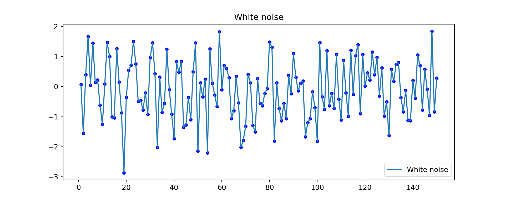
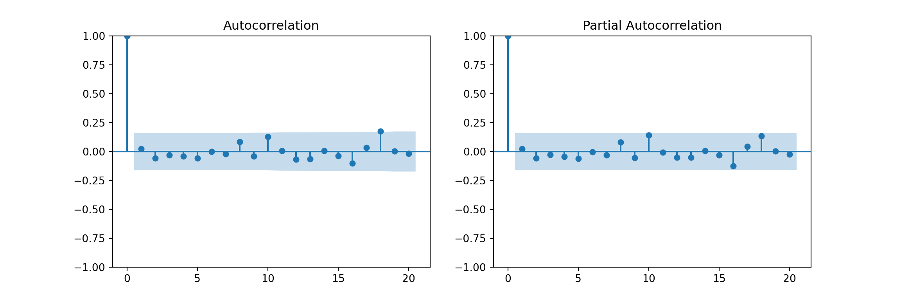
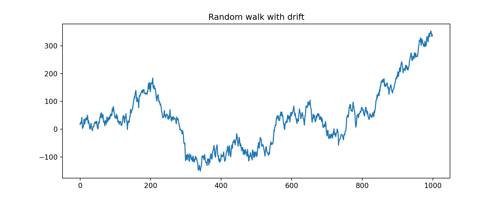
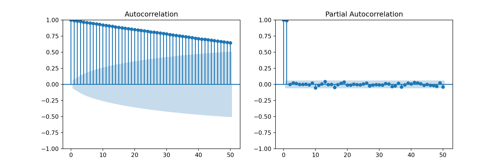
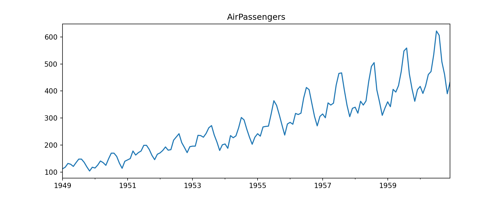
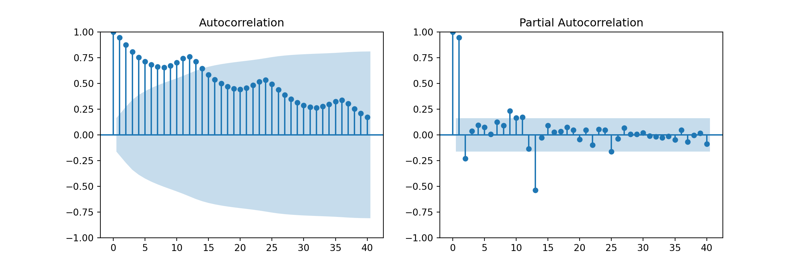
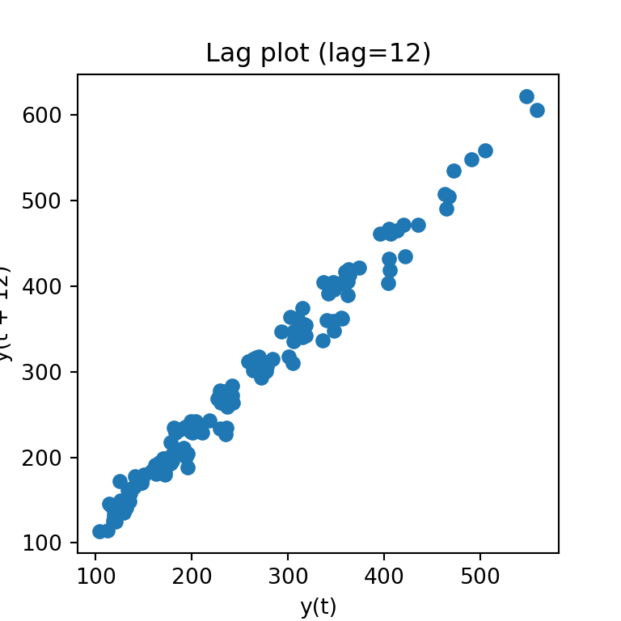
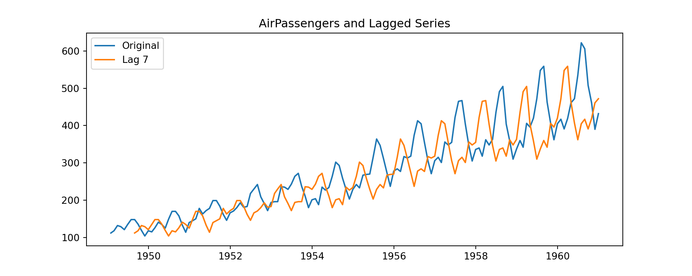

#####################################################################
########## Lab Practice 2: ARMA models ###########
#####################################################################2025_09_10 Stochastic Processes, ARMA Processes, lecture notes
Load the required libraries
import numpy as np
import pandas as pd
import matplotlib.pyplot as plt
import seaborn as sns
from statsmodels.graphics.tsaplots import plot_acf, plot_pacf
from statsmodels.tsa.stattools import acf, pacf
import statsmodels.api as smWhite Noise
We will create a Gaussian white noise time series.
n = 150
z = np.random.normal(loc=0, scale=1, size=n)
z[:30]array([ 0.07585081, -1.55746006, 0.39685606, 1.66817381, 0.04864835,
1.44406658, 0.14177299, 0.21854667, -0.6193585 , -1.24822058,
0.09445128, 1.46954928, 0.99946484, -1.00218414, -1.03381406,
1.26356787, 0.14928199, -0.86890018, -2.86373656, -0.3530479 ,
0.5502386 , 0.71399476, 1.50966425, 0.75487703, -0.48757259,
-0.46243564, -0.77212946, -0.20367979, -0.92316909, 0.96387217])Convert to a pandas Series with integer index:
w = pd.Series(z, index=np.arange(1, n+1))
w.head(25)1 0.075851
2 -1.557460
3 0.396856
4 1.668174
5 0.048648
6 1.444067
7 0.141773
8 0.218547
9 -0.619359
10 -1.248221
11 0.094451
12 1.469549
13 0.999465
14 -1.002184
15 -1.033814
16 1.263568
17 0.149282
18 -0.868900
19 -2.863737
20 -0.353048
21 0.550239
22 0.713995
23 1.509664
24 0.754877
25 -0.487573
dtype: float64Time plot of the white noise time series:
plt.figure(figsize=(10,4))
plt.plot(w, label="White noise")
plt.scatter(w.index, w, color="blue", s=15)
plt.title("White noise")
plt.legend()
plt.show()
ACF and PACF of white noise
fig, axes = plt.subplots(1, 2, figsize=(12,4))
plot_acf(w, lags=20, ax=axes[0])
plot_pacf(w, lags=20, ax=axes[1], method="ywm")
plt.show()
Random Walks
A random walk is an stochastic process usually defined by: \[y_t = k + y_{t-1} + w_t\]
np.random.seed(2024)
n = 1000
k = 0.1
w = 10 * np.random.normal(size=n)
rw_ts = pd.Series(k * np.arange(1, n+1) + np.cumsum(w))Plot:
plt.figure(figsize=(10,4))
plt.plot(rw_ts)
plt.title("Random walk with drift")
plt.show()
ACF and PACF of random walk
fig, axes = plt.subplots(1, 2, figsize=(12,4))
plot_acf(rw_ts, lags=50, ax=axes[0])
plot_pacf(rw_ts, lags=50, ax=axes[1], method="ywm")
plt.show()
ACF for a Seasonal Series
We’ll use the classic AirPassengers dataset from R (available in statsmodels):
import statsmodels.datasets
data = statsmodels.datasets.get_rdataset('AirPassengers').data
# data = airpassengers.load_pandas().data
AirPassengers = pd.Series(data['value'].values,
index=pd.date_range("1949-01", periods=len(data), freq="ME"))Time plot:
AirPassengers.plot(figsize=(10,4), title="AirPassengers")
plt.show()
ACF and PACF
fig, axes = plt.subplots(1, 2, figsize=(12,4))
plot_acf(AirPassengers, lags=40, ax=axes[0])
plot_pacf(AirPassengers, lags=40, ax=axes[1], method="ywm")
plt.show()
Examine numerical ACF values:
acf_vals = acf(AirPassengers, nlags=24)
acf_valsarray([1. , 0.94804734, 0.87557484, 0.80668116, 0.75262542,
0.71376997, 0.6817336 , 0.66290439, 0.65561048, 0.67094833,
0.70271992, 0.74324019, 0.76039504, 0.71266087, 0.64634228,
0.58592342, 0.53795519, 0.49974753, 0.46873401, 0.44987066,
0.4416288 , 0.45722376, 0.48248203, 0.51712699, 0.53218983])Lag plots
from pandas.plotting import lag_plot
plt.figure(figsize=(4,4))
lag_plot(AirPassengers, lag=12)
plt.title("Lag plot (lag=12)")
plt.show()
Time plot of original vs lagged series
k = 7
lagged = AirPassengers.shift(k)
AirPassengers_lag = pd.DataFrame({
"Original": AirPassengers,
f"Lag {k}": lagged
})
AirPassengers_lag.head(k+2) Original Lag 7
1949-01-31 112 NaN
1949-02-28 118 NaN
1949-03-31 132 NaN
1949-04-30 129 NaN
1949-05-31 121 NaN
1949-06-30 135 NaN
1949-07-31 148 NaN
1949-08-31 148 112.0
1949-09-30 136 118.0plt.figure(figsize=(10,4))
plt.plot(AirPassengers_lag["Original"], label="Original")
plt.plot(AirPassengers_lag[f"Lag {k}"], label=f"Lag {k}")
plt.title("AirPassengers and Lagged Series")
plt.legend()
plt.show()